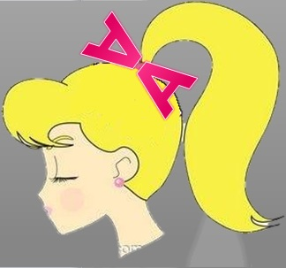

Mrs. A's Custom Cheer and Fashion Bows

My price point is reasonable, and I offer a service that many of my competitors do not offer (customized bows)
As a new business, I have to depend on spending a lot of money on marketing in order to get my name out there, thus reducing profits. I also need to sell almost 2 bows a day in order to acheive the profit estimates, which may be difficult as a new business. Though I may not receive two orders per day on a regular basis, I can depend on the days on which I have a sales table at local competitions, wherein I hope to sell upwards of 50 in a day.
My business is small and local in a community that appreciates and reveres "buying local." I plan to take advantage of this by heavily marketing in my local community and including phrases like "buy local," "independently owned" and "small business" in my marketing materials.
Many materials are needed for the production of each bow. The cost of any or all these materials may rise at any time, as may the cost of shipping. There is also the chance that bow orders will be cancelled/payment will bounce after it has been produced, leaving me with an un-sellable product and a loss of materials. I have decided to address these concerns by setting an annual materials spending cap of $2232 regardless of amount of materials purchased. Because my cost estimates are based of original prices for materials, I plan to take advantage of sales and coupons so that I may purchase more product with my budget. If I am left with a custom bow that is unpaid for, I will use it as an example at my sales table when I go to competitions, with the option of selling it at cost.